QQ Account stolen history
最近，也就是5月17日，早上10點28分左右， 我的QQ號碼被盜。給各位QQ好友帶來的不便，我表示真的很抱歉。
誠に申し訳ない!
概況
12點左右，在宿舍門口，我的同學告訴我，我的帳號被盜了，管別人要錢呢，我才發現。也怪自己沒有看手機的習慣。我嘗試著重新登錄，發現對方已經改了我QQ的密碼。事情真的不妙。
這次盜號，犯人一共和我67名好友進行了聊天，一共刪除了我29名好友以及退出了兩個QQ群。
分析
雖然，最後恢復了所有。我想把我的這次經歷寫下來。
我的好友分組
我的好友分組大概是這個樣子的：
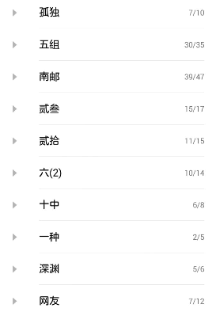
| 孤獨 | 10 | 所有人均沒有打備註 | 犯人並未對其中任何人發起聊天 |
| 五組 | 35 | 大部分人都有詳細的備註，包括學號和姓名 | 除少數不在線的人，犯人均發起了聊天 |
| 南郵 | 47 | 大部分人都有詳細的備註，包括學號和姓名 | 奇怪的是，犯人並沒有和其中任何人發起聊天，我估計犯人覺得他們不是我的熟人 |
| 貳叁 | 17 | 大部分人有姓名備註 | 除了個別人和少數不在線的人，均發起聊天 |
| 貳拾 | 15 | 大部分人有姓名備註 | 均未發起聊天 |
| 六(2) | 14 | 大部分人有姓名備註 | 除少數離線的人，均發起聊天 |
| 十中 | 8 | 大部分人有姓名備註 | 除少數離線的人，均發起聊天 |
| 一種 | 5 | 均有姓名備註 | 除離線的3個人外，對在線的2個人發起聊天 |
| 深淵 | 6 | 均有姓名備註 | 均聊天 |
| 網友 | 12 | 均沒有任何備註 | 均未聊天 |
犯人的聊天方式
犯人聊天發起的方式
STEP1：
｢無中生有找話題｣
--在啊
｢對方有回應之後，**為我備註中的稱呼，比如：超哥。如果是打全名，則一般為空｣
--**問你個事，你微信綁卡了嗎？
｢對方回應有綁之後，否則進入STEP0｣
--我微信綁不上卡，我想轉500到你的卡裡，然後你幫我轉到我朋友微信，可以嗎？
｢對方回應可以之後，否則進入STEP0｣
--你支付寶帳號發給我一下。
｢收到了對方的支付寶帳號後｣
--我現在轉。<這裡還會發送一張轉帳成功的截圖>我轉好了，我是網銀轉給你的，我還多轉了10塊錢，你查一下。
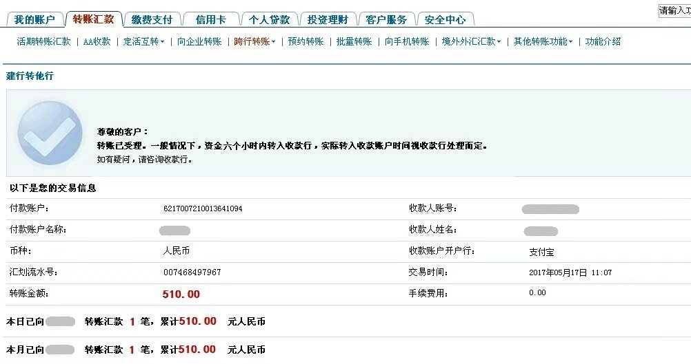
大部分久不聯繫的好友都會回復這樣的話
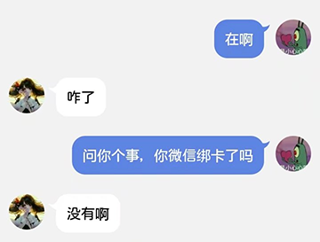
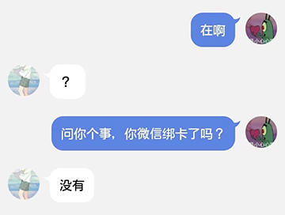
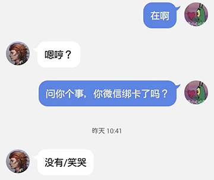
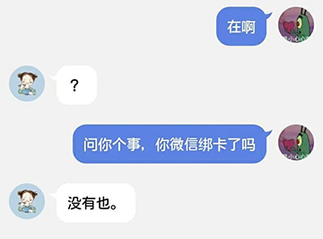
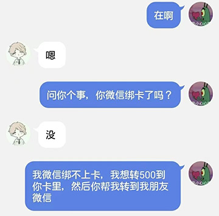
當然更多的是完全不回話，估計他們到現在都不知道我被盜號了。
有些人則選擇機智的周旋
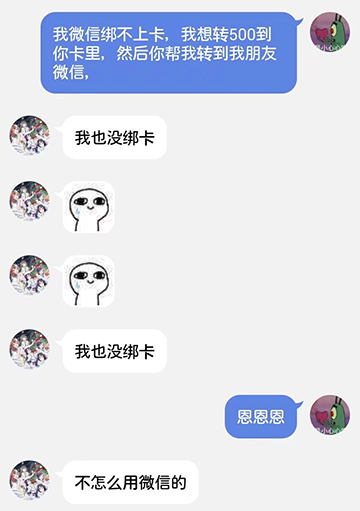
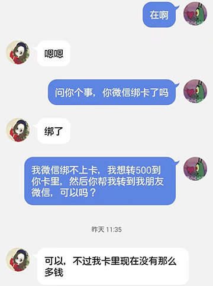
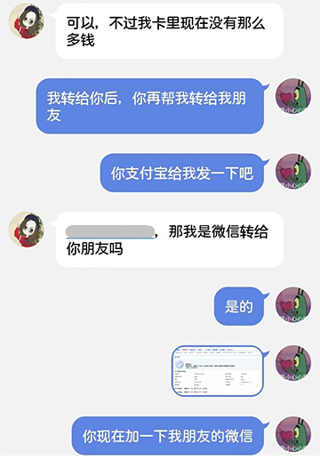
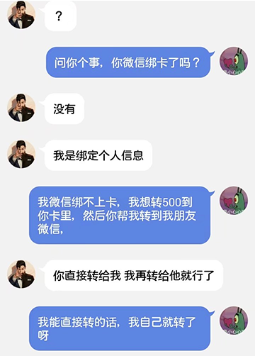
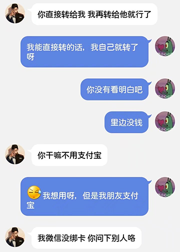

STEP2：
｢犯人要求轉帳的方式｣
--你現在加一下我朋友微信
--yoyo22336
--你現在轉錢給她，她現在著急要用錢的
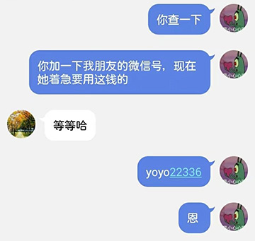
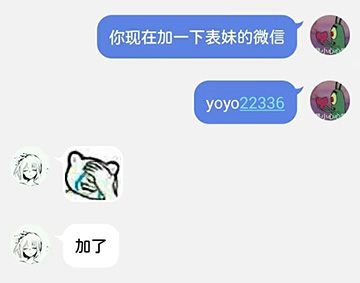
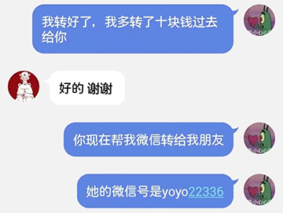
STEP3:
｢被對方問起錢沒有到帳時，犯人明顯的不耐煩｣
--網銀轉支付寶應該有延遲
--你等下我看看大概要多久才能到你那邊
--我查了，大概要2-6小時之內才能到
--<一張轉帳已受處理的截圖>
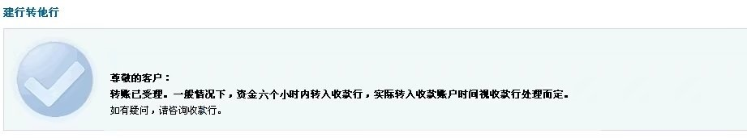
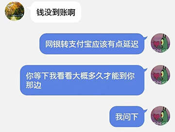
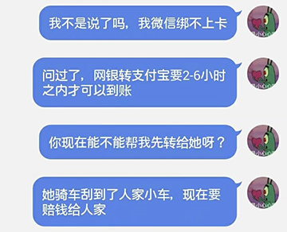
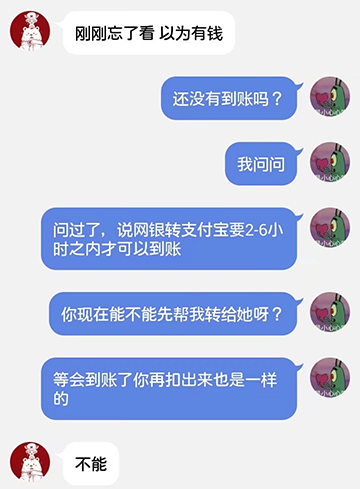
STEP4：
｢被問到要錢的原因｣
--我的一個朋友，她騎車刮到了人家車，現在要賠錢給人家
--你現在不能幫我湊一點過去給她嗎？
--你在那邊能不能幫我想想辦法
--你現在不能幫我湊一點過去給她嗎？
--你在那邊能不能幫我想想辦法
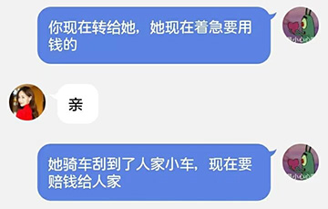
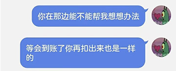
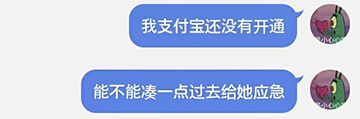
STEP0：
周旋一陣，如果見情況不對，｢對方沒有給回應或犯人感覺被識破之後｣，果斷刪除好友。
做案手法之識破
可以要求犯人發送語音，打電話
｢最直接有效。犯人會發送一個空錄音過去並說是揚聲器的問題，或者不在說話｣
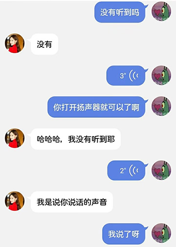
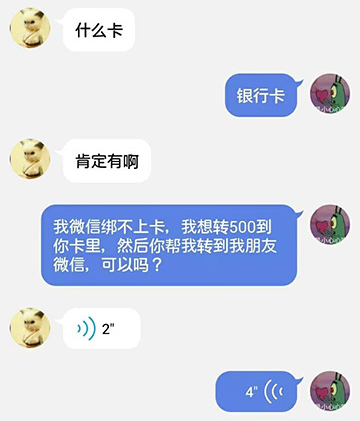
左邊的那句話是：發語言
右邊的是完全沒有任何聲音
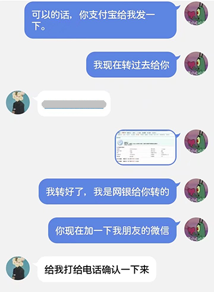
大膽地質疑，要求犯人說出姓名及更多信息
｢一般無效。犯人的回答很直接，我並沒有被盜號。而且這個犯人至少是知道了我的姓名，而我也給大多數QQ好友打了備註，並且按認識時間分組，犯人盜取我的帳號之後，想必可以猜出我們的關係，除少部分不打備註的好友之外｣
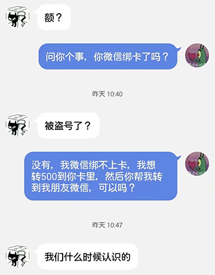
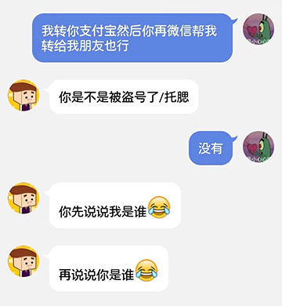
要求對方發送QQ紅包轉帳
｢厲害了，老鐵。｣
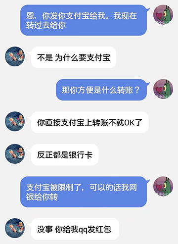
轉帳紀錄的辨別
截圖分析
轉帳截圖大概如下｢已打碼｣
收款人帳號即STEP1中問出的支付寶帳號
收款人姓名為QQ好友的備註
付款帳戶為6217 0072 1001 3641 094
經查詢，並沒有存在此卡的任何信息
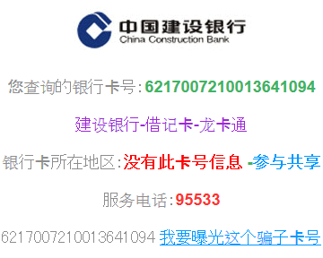
付款帳戶名稱為我的姓名
匯劃流水號為 0074 6849 7967
我沒有查到該更多的信息，不過如果你想查查看，按這裡
另外，建设银行电子银行的交易凭证号中，是不會顯示收款人姓名的。而且，收款人帳號是會顯示****的
截圖製作
那麼，這張圖片是如何製作的呢？
我嘗試著製作了一個這樣的模板｢使用軟體：Photoshop｣：
效果預覽
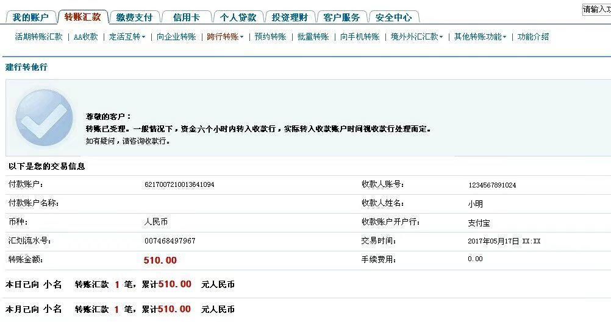
圖層信息

字體信息
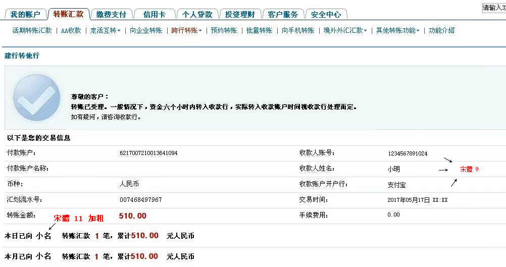
一個細節
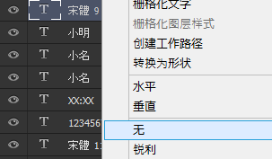
字體的模式選擇｢無｣，當然，這是默認的。
字體背後的模糊效果應該是圖片壓縮後產生的，而不是PhotoShop加上去的。
被盜號後的處理
凍結帳號
凍結帳號請按這裡。我感覺沒有任何用處，不知道密碼的只能通過帳號申訴來完成，效率非常低。
重置密碼
使用已幫定的手機號重置密碼，沒有綁定的通過忘記密碼進行查找，入口都是一樣的。
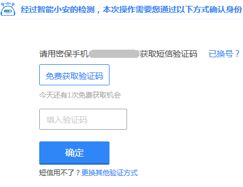
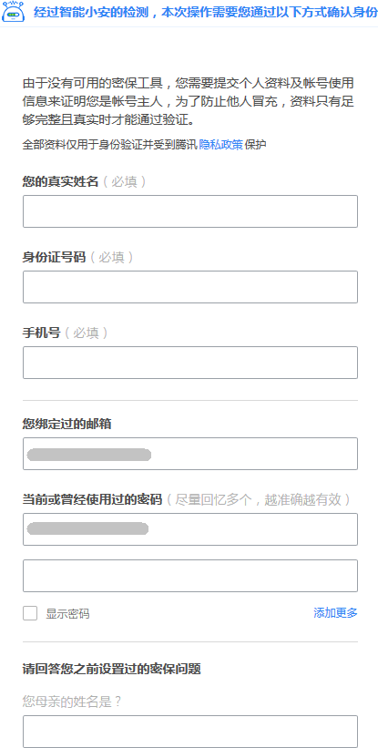
重新登錄
使用新密碼登陸帳號
恢復好友
恢復被刪除的好友和QQ群，同時看看有沒有被哪個群踢了，雖然犯人一般不會在群裡發消息。
同步聊天紀錄
國際版QQ具體操作如下
- 勾選 設置->聊天紀錄->同步最近聊天紀錄至本機
- 退出帳號，然後重新登錄即可
因為我只是用國際版的QQ客戶端，所以只介紹到這裡，其他版本的客戶端請自行查詢同步方法。
查詢犯人
查詢最近登陸的IP
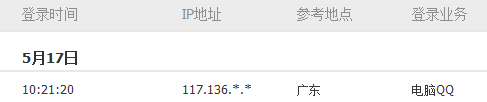
找人黑了這個節點。當然，我找不到人，如果你認識人，介紹給我。
最後一步
給所有受到困擾的人道歉。
結語
也沒有什麼好總結的，寫這篇博客浪費了我一個下午的時間，雖然這時間也沒有什麼特別的事情。
不過，作為一名計算機學科的學生，居然被盜號了，我也真的是一臉納悶。我怎麼說也是13位密碼長度+大小寫混合。
我估計洩漏信息是通過寫問卷調查洩漏的。
雖然我經常使用VPN，但是我的電腦並沒有安裝QQ的客戶端。而且，我的twitter，facebook也都沒有事。
在這裡，我要告訴所有和我聊天的好友判別對面是不是敝人的方法：
我只會使用QQ手機端國際版登陸，電腦上我沒有安裝QQ的客戶端。如果和我聊天的時候，發現我的下面沒有那個地球的標誌，那麼，就是我出事了。
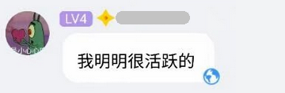
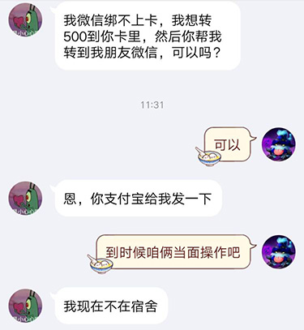
這兩張圖，看明白了嗎？
好了，讓我們轉換一下心情，看幾組有趣的會話吧。
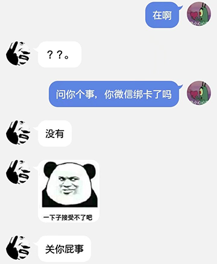
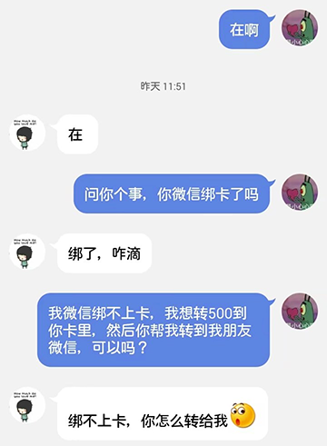
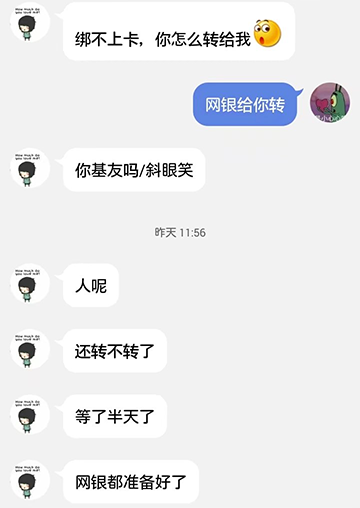
這，我也很無奈啊

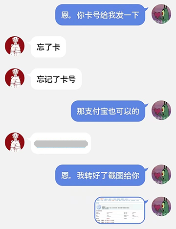
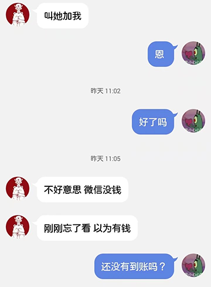
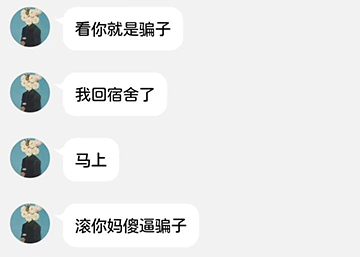
就目前來看，發生過聊天的67人中，沒有一個人對該犯人進行過轉帳。
除了這個名字叫100000000的1分錢紅包。

關於yoyo22336這個微信號，我不想去做太多的調查了。就算舉報刪除了帳號，犯人也還會繼續申請新的帳號的。治標不治本的事情我就不浪費時間了。請給位好友注意點便罷。
我只想跟犯人說：
年輕人，對我這空得一逼得QQ錢包很鬱悶吧？你說對了，我還真的沒有綁定銀行卡。而且，很巧，我也真的沒有支付寶。
too young, too simple
最後，我就納悶了，沒事退我群幹嘛。讓我又受到了一波歡迎新人的罰ゲーム。
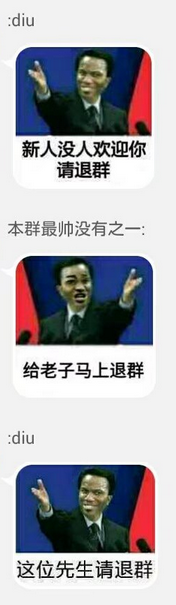